Öğrenci 5 — pandas vs Spark işleme performansı
Her nokta 3 tekrarın ortalaması (1 ısınma atıldı). pandas işlemleri bellekteki tabloda çalışır; Spark tembel olduğu için her işlem dosyadan okuyarak çalışır; Spark + cache veriyi bir kez önbelleğe alır ve işlemleri oradan çalıştırır. "Uçtan uca" = hazırlık (pandas yükleme · Spark oturum açılışı · Spark + cache açılış + önbelleğe yükleme) + üç işlemin toplamı. 19M'den büyük nokta sentetiktir (19M verinin 3 kopyası).
pandas tepe belleğinin kayıt başına eğimi — CSV: 0,14 KB/kayıt · Parquet: 0,16 KB/kayıt. Spark oturum açılışı 11 bağımsız süreçte 5,62 ± 0,16 sn. Spark + cache oturum açılışı 13 bağımsız süreçte 6,82 ± 0,71 sn. Açılış kodu iki motorda aynı; fark ölçüm oturumundan (makine durumu) geliyor.
Not: tepe bellek, işlemlerin aynı süreçte sırayla (groupby → join → window) çalıştığı ölçümdendir; JVM belleği küçülmediği için işlem başına değer bir üst sınırdır.
Tablo görünümü
Dosya düzeni kontrolü (19M Parquet: 3 vs 23 row group)
| Motor | Adım | 3 row group (sn) | 23 row group (sn) | Hızlanma |
|---|---|---|---|---|
| pandas | groupby_hour | 0,70 | 0,69 | 1,02× |
| pandas | join_borough | 2,12 | 2,04 | 1,04× |
| pandas | load | 0,37 | 0,25 | 1,47× |
| pandas | window_top3 | 2,09 | 2,08 | 1,01× |
| Spark | groupby_hour | 0,91 | 0,84 | 1,08× |
| Spark | join_borough | 0,71 | 0,64 | 1,11× |
| Spark | window_top3 | 6,09 | 3,85 | 1,58× |
| Spark + cache | groupby_hour | 0,69 | 0,55 | 1,25× |
| Spark + cache | join_borough | 0,61 | 0,47 | 1,28× |
| Spark + cache | load | 8,93 | 5,22 | 1,71× |
| Spark + cache | window_top3 | 3,33 | 3,35 | 1,00× |

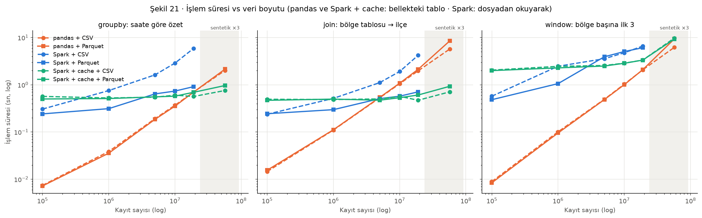

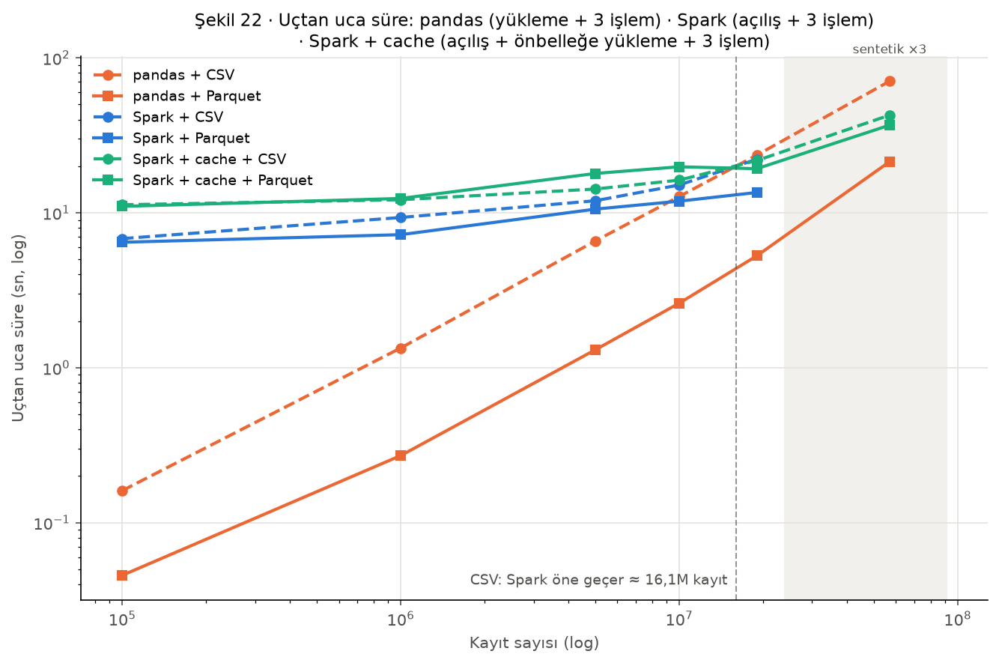

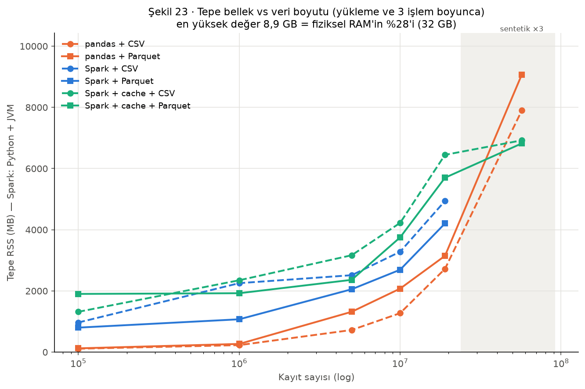

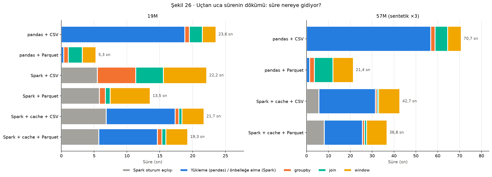
Öğrenci 1 — Veri temini, format dönüşümü, okuma performansı
19M kayıtta tam okuma (S1'in makinesi: 28 çekirdek, 16 GB RAM).
| Motor | Format | Disk (MB) | Okuma (sn) | pandas tepe (MB) |
|---|---|---|---|---|
| pandas | CSV | 1.907 | 71,1 | 9.437 |
| pandas | Parquet snappy | 392 | 1,8 | 5.815 |
| Spark | CSV | 1.907 | 8,1 | — |
| Spark | Parquet snappy | 392 | 3,7 | — |

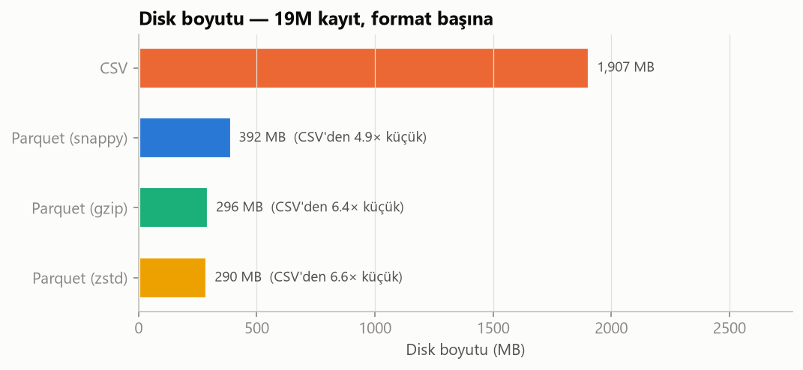

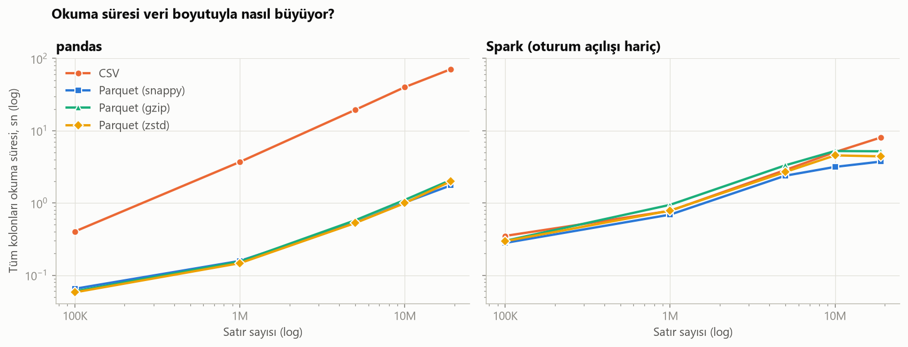

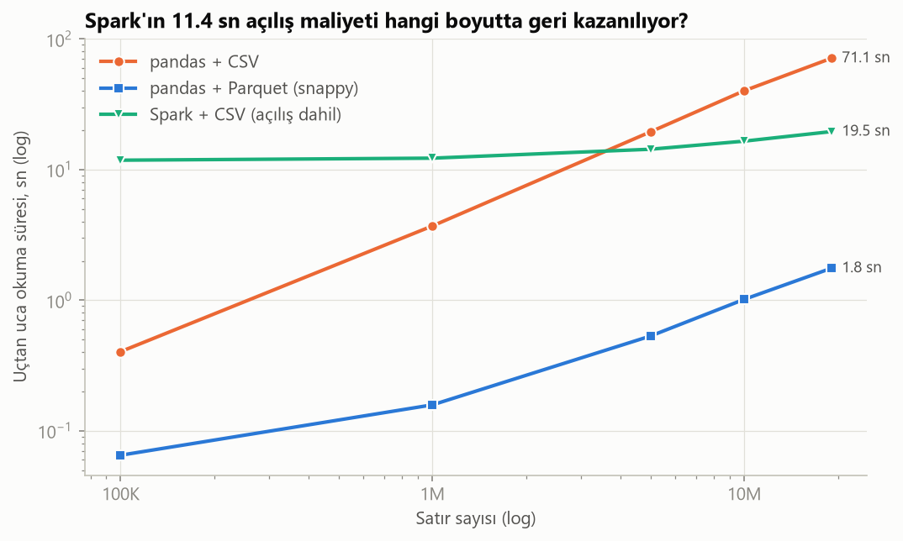

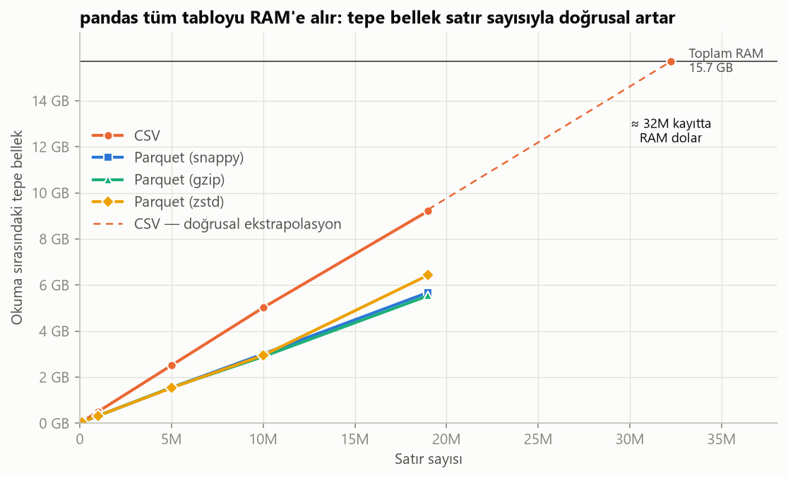

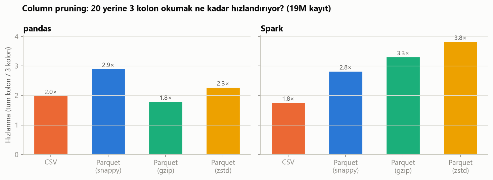
Öğrenci 2 — Temizlik ve anomali analizi
18.999.282 → 17.210.961 kayıt (%90,6 korundu); 10 kural, kural vs istatistiksel anomali.

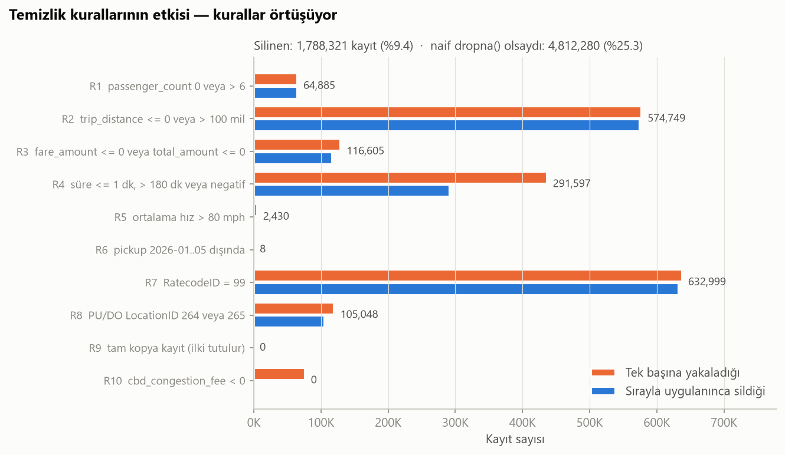

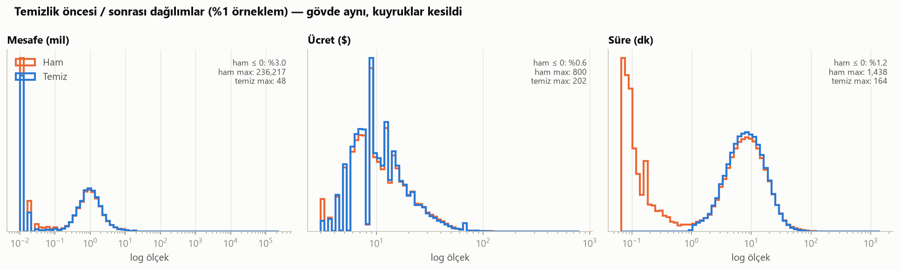

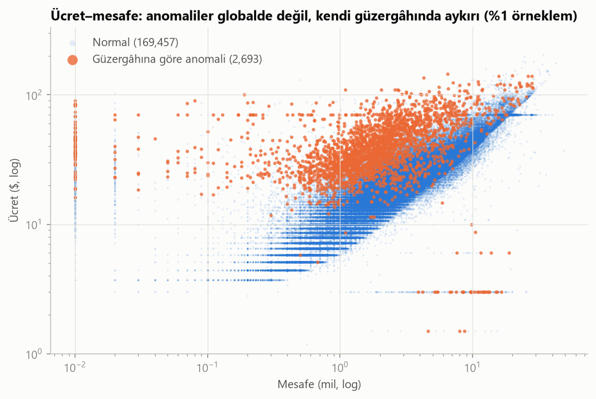

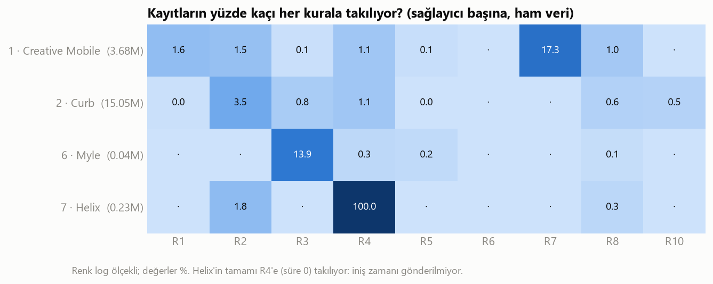

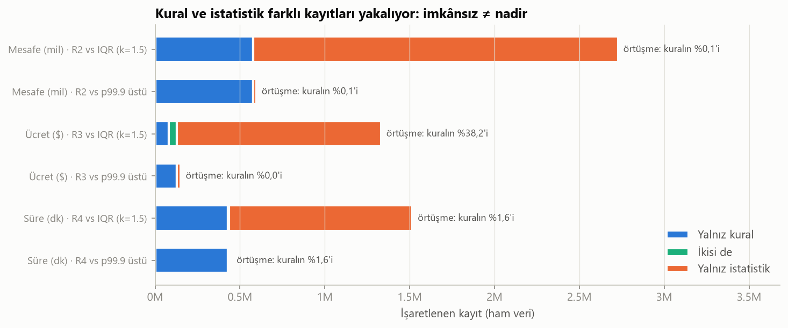
Öğrenci 3 — Saat, gün, bölge ve ödeme türü aggregation'ları

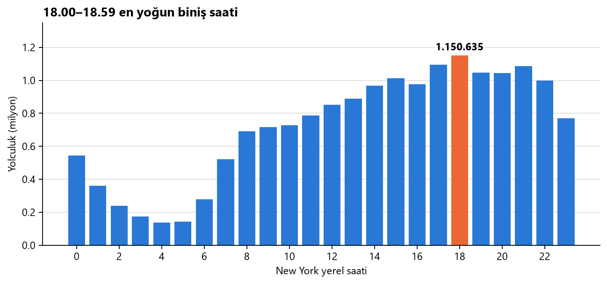

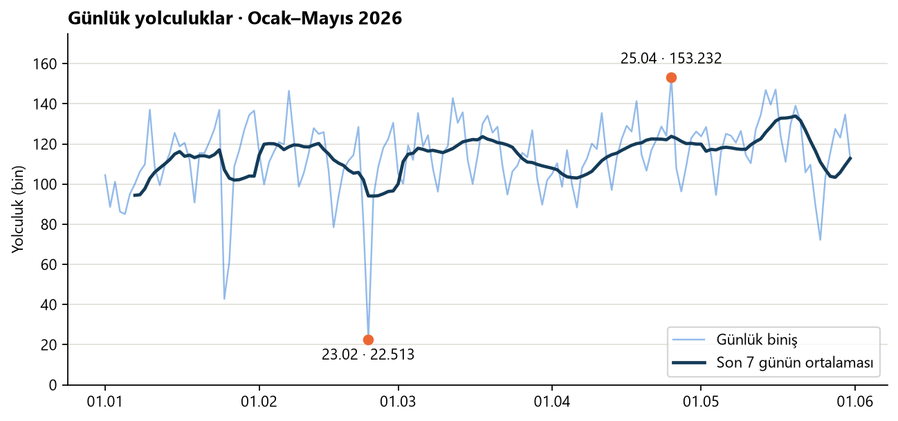

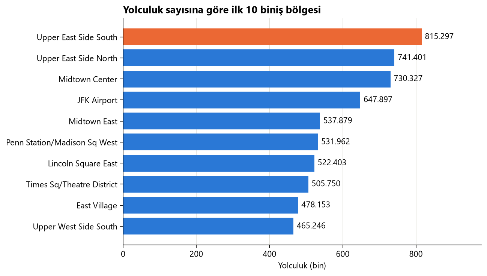

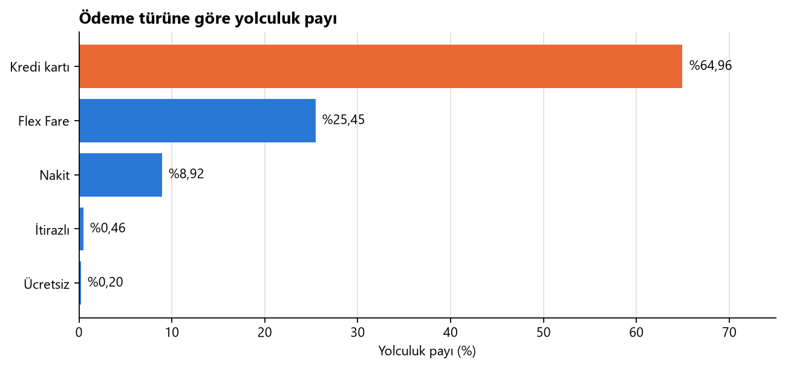

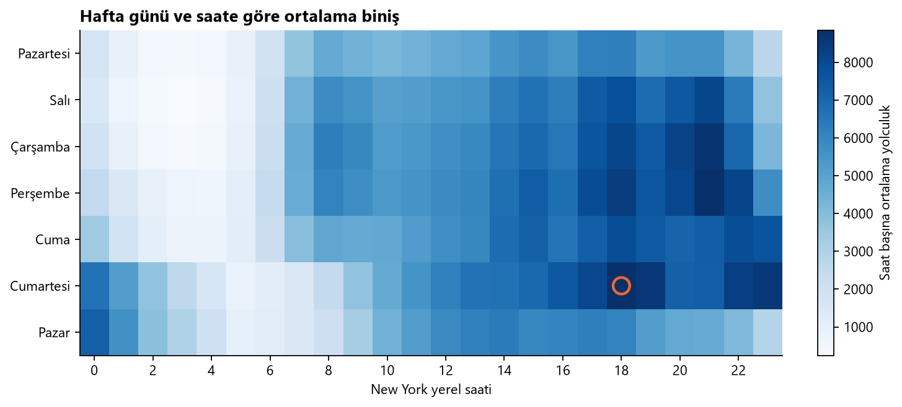

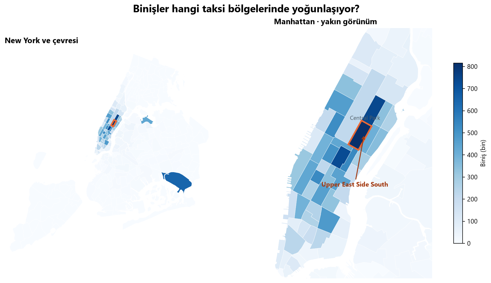

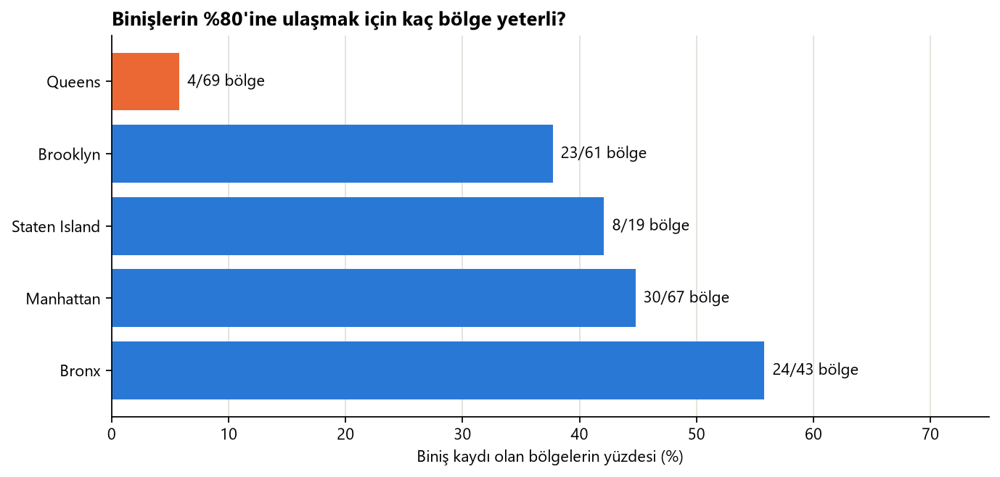
Öğrenci 4 — Yolculuk süresi tahmini: PySpark MLlib vs scikit-learn
Aynı örneklem, aynı train/test ayrımı, aynı özellikler ve hiperparametreler; 100K–5M örneklem ve verinin tamamı (17M). Spark verisi eğitimden önce 20 bölüme dağıtıldı. Bellek: süreç ağacının tepe RSS'i (Spark'ta JVM dahil).
| Çerçeve | Model | Boyut | RMSE (dk) | R² | Eğitim (sn) | Tepe RSS (MB) |
|---|---|---|---|---|---|---|
| PySpark | LinearRegression | 100K | 7,202 | 0,643 | 4,07 | 958 |
| PySpark | GBTRegressor | 100K | 5,963 | 0,755 | 103,43 | 2.484 |
| scikit-learn | LinearRegression | 100K | 7,201 | 0,643 | 0,49 | 210 |
| scikit-learn | HistGradientBoosting | 100K | 5,714 | 0,775 | 0,20 | 212 |
| PySpark | LinearRegression | 1M | 7,170 | 0,648 | 4,47 | 2.124 |
| PySpark | GBTRegressor | 1M | 5,538 | 0,790 | 104,67 | 4.615 |
| scikit-learn | LinearRegression | 1M | 7,170 | 0,647 | 6,86 | 746 |
| scikit-learn | HistGradientBoosting | 1M | 5,571 | 0,787 | 1,13 | 553 |
| PySpark | LinearRegression | 5M | 7,175 | 0,647 | 5,96 | 3.363 |
| PySpark | GBTRegressor | 5M | 5,469 | 0,795 | 140,70 | 6.159 |
| scikit-learn | LinearRegression | 5M | 7,176 | 0,647 | 32,09 | 3.071 |
| scikit-learn | HistGradientBoosting | 5M | 5,561 | 0,788 | 4,84 | 2.209 |
| PySpark | LinearRegression | 17M | 7,163 | 0,649 | 9,88 | 5.651 |
| PySpark | GBTRegressor | 17M | 5,453 | 0,796 | 269,10 | 6.918 |
| scikit-learn | LinearRegression | 17M | 7,163 | 0,649 | 106,91 | 10.088 |
| scikit-learn | HistGradientBoosting | 17M | 5,540 | 0,790 | 19,88 | 7.133 |
Özellik sızıntısı (5M, HistGradientBoosting)
| Özellik seti | RMSE (dk) | MAE (dk) | R² |
|---|---|---|---|
| Tam (8 sayısal + bölgeler) | 5,561 | 3,604 | 0,788 |
| Biniş anı (ücret kalemleri yok) | 5,536 | 3,571 | 0,790 |
| Yalnız bölge + zaman (mesafe yok) | 6,912 | 4,912 | 0,673 |
Hiperparametre araması (1M doğrulama → 5M test, biniş anı özellikleri)
| Model | Ayar | Test RMSE (dk) | R² | Eğitim (sn) |
|---|---|---|---|---|
| Ana deneydeki ayar | 50 ağaç · derinlik 5 · lr 0,10 | 5,536 | 0,790 | 4,4 |
| Arama ile seçilen ayar | 200 ağaç · derinlik sınırsız (63 yaprak) · lr 0,10 | 5,042 | 0,826 | 15,9 |

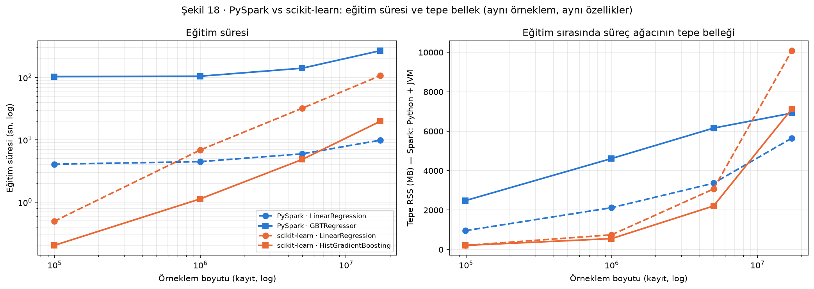

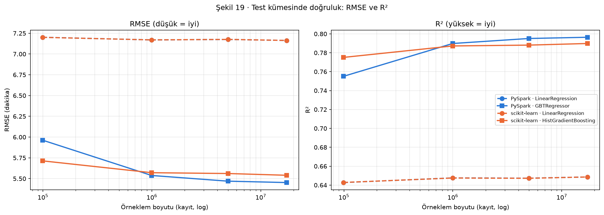

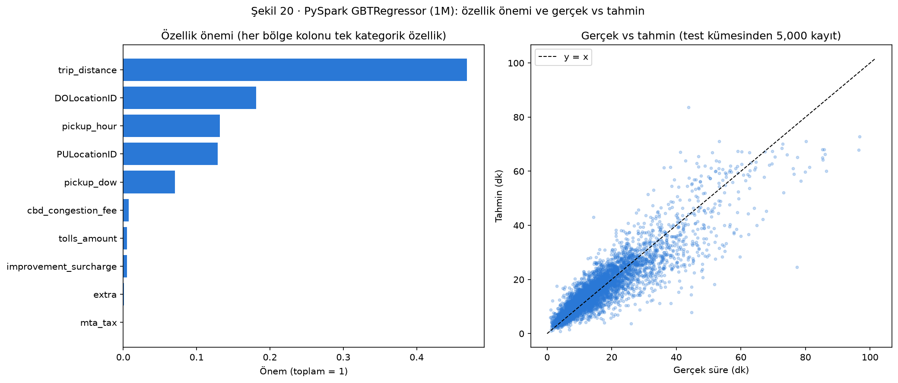

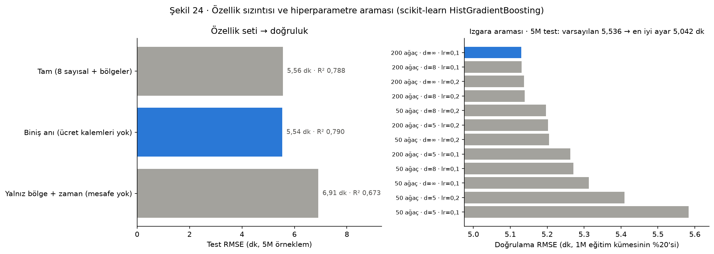

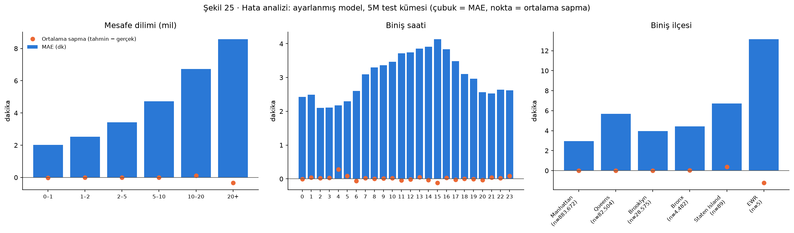